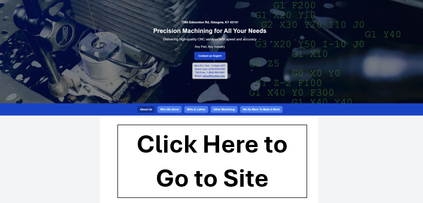

Application Delivery
End-to-end implementation across front-end, back-end, and deployment workflows using modern JavaScript and TypeScript stacks.
Full-Stack Developer · Technical Project Delivery
Scalable web applications, shipped from requirements to production.
Full-stack developer focused on building scalable web applications and executing technical projects end-to-end. Strong background in modern frameworks, database design, and cloud deployments.
What I Bring
I build polished web products, translate requirements into practical systems, and stay close to the details that make production delivery reliable.
End-to-end implementation across front-end, back-end, and deployment workflows using modern JavaScript and TypeScript stacks.
Schema design, reporting flows, operational tooling, and access control built for long-term maintainability.
Troubleshooting build failures, deployment issues, runtime bugs, and cross-functional project needs in real environments.
Featured Work
A complete UI/UX front-end redesign paired with a transition to server-side rendering in Next.js for kentuckymachining.com.

Project Archive
GitHub repository for the kentuckymachining.com transition to a standalone server-side rendered Next.js setup.
Open projectA Tableau dashboard project built from SQL Server data to make COVID-19 trends easier to analyze and present.
View dashboard
SQL Server query work used to prepare the source data behind the associated Tableau visualizations.
Open queries
The GitHub repository for the portfolio website itself, showing iterative design and development work.
View repositoryRecruiter Quick View
The portfolio now separates project work, resume details, and certification records so each page is easier to scan and more professional in client-facing reviews.